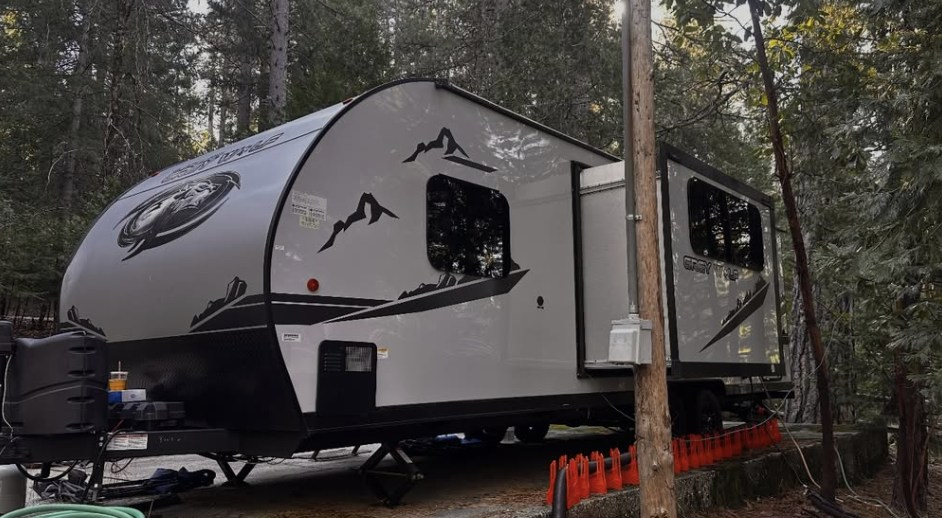
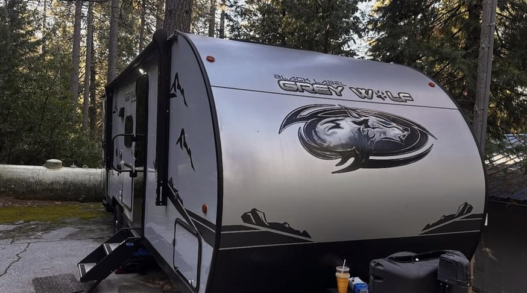
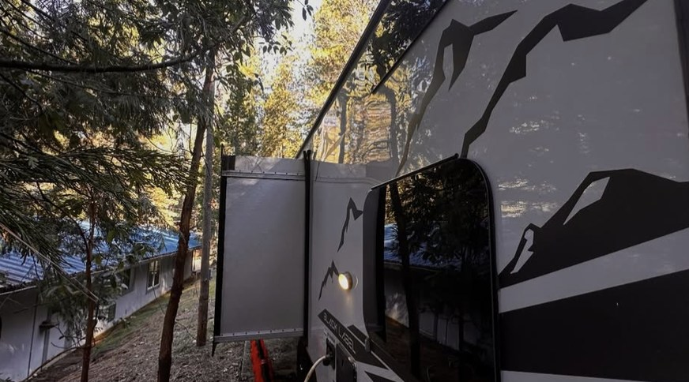

01 / SERVICE
MOBILE RV REPAIR
On-site repair help for recreational vehicles, without the added hassle of transporting your RV to a shop.
ASK ABOUT SERVICE49er RV Repair offers both mobile RV repair and in-shop service from Grass Valley. Proudly serving Nevada, Placer, and Yuba counties—call us to discuss the right repair option for you.
Whether you need mobile repair at your location or prefer to bring your RV to our Grass Valley shop, we're here to help.
On-site repair help for recreational vehicles, without the added hassle of transporting your RV to a shop.
ASK ABOUT SERVICEMobile repair assistance for travel trailers so you can focus on your plans, not your repair logistics.
ASK ABOUT SERVICETell us what is happening with your RV or trailer. We'll help determine the next step and appointment options.
REQUEST HELPNeed help with a particular component, appliance, or system? Call to confirm availability for your specific repair.
RVs are made for freedom. Repairs shouldn't take that away. We offer a straightforward way to request service at your RV's location.
Mobile service means less time figuring out how to get your RV to a repair facility.
Contact us any day of the week to discuss scheduling and availability.
Call and explain your repair needs so we can discuss a practical next step.
A closer look at RVs and trailers from the 49er Mobile RV Repair collection.



49er RV Repair provides mobile and shop RV and trailer repair across Nevada, Placer, and Yuba counties. Our shop is located at 13321 Grass Valley Ave #3, Grass Valley, CA 95945.
Whether you live in your RV, use it for weekend getaways, or travel with a trailer, you can call us to discuss your repair needs and arrange an appointment.
VISIT OUR ORIGINAL WEBSITEProudly serving Nevada, Placer, and Yuba counties with mobile and in-shop RV repair. Visit our Grass Valley location or call to arrange mobile service.
CHECK MY LOCATIONOur shop: 13321 Grass Valley Ave #3
Grass Valley, CA 95945
Call to plan a mobile repair or shop visit.
Here's a quick guide to getting started with mobile RV repair.
CALL WITH A QUESTIONYes. 49er RV Repair offers mobile service as well as repair at our Grass Valley shop. Call us to discuss your location and repair request.
Appointments are offered Monday through Sunday. Please call to discuss availability and schedule service.
We are associated with the Nevada City area. Grass Valley and nearby communities can call to ask about coverage for their exact location.
Pricing depends on the service request. Please call to confirm current diagnostic fees, labor charges, travel fees, and any applicable discounts before scheduling.
Tell us the make, model, issue, and location of your RV or trailer. We can discuss whether that type of work is currently offered.
Tell us what's going on. We'll discuss your service request and appointment options.
Calling is the fastest way to discuss the work you need. You can also prepare a text message with your name, location, and a brief description of the issue.
(530) 350-5550Serving Nevada, Placer & Yuba counties
Mobile and shop service available
13321 Grass Valley Ave #3, Grass Valley, CA 95945
Monday – Sunday: By appointment
Fill this out to open a prewritten text message on your device. No information is stored on this site.